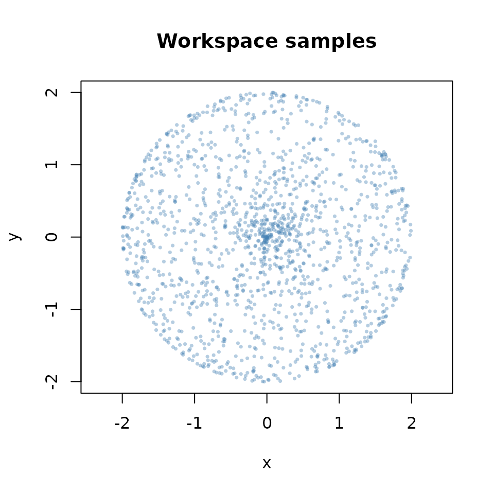

Forward kinematics, Jacobians and inverse kinematics
Source:vignettes/kinematics.Rmd
kinematics.RmdForward kinematics
For a tree, the pose of every link follows from a single pass from
the base outward. robot_fk() returns the end-effector pose
by default, any named frame, or all frames.
arm <- robot_example("planar2")
q <- c(0.6, -1.1)
robot_fk(arm, q)
#> <robot_pose> SE(3) world <- link2
#> [,1] [,2] [,3] [,4]
#> [1,] 0.8776 0.4794 0 1.7029
#> [2,] -0.4794 0.8776 0 0.0852
#> [3,] 0.0000 0.0000 1 0.0000
#> [4,] 0.0000 0.0000 0 1.0000
# Closed form for unit links.
c(cos(q[1]) + cos(q[1] + q[2]), sin(q[1]) + sin(q[1] + q[2]))
#> [1] 1.70291818 0.08521693Batches of configurations go one per row:
Q <- rbind(c(0, 0), c(pi / 2, 0), c(pi / 2, pi / 2))
robot_fk_positions(arm, Q)
#> x y z
#> [1,] 2.000000e+00 0 0
#> [2,] 2.220446e-16 2 0
#> [3,] -1.000000e+00 1 0
robot_plot_workspace(arm, n = 1500, seed = 1)
The geometric Jacobian
The geometric Jacobian J(q) maps joint velocities to the spatial velocity of a point on the end effector, linear part first:
\begin{pmatrix} v \\ \omega \end{pmatrix} = J(q) \, \dot q.
For a revolute joint i with world axis z_i through point p_i, column i is (z_i \times (p - p_i), \; z_i); for a prismatic joint it is (z_i, 0).
reference = "world" expresses both parts in world
coordinates at the end-effector origin. "local" expresses
them in the end-effector frame, and "space" returns the
spatial (twist) Jacobian at the world origin.
J <- robot_jacobian(arm, q)
round(J, 6)
#> joint1 joint2
#> vx -0.085217 0.479426
#> vy 1.702918 0.877583
#> vz 0.000000 0.000000
#> wx 0.000000 0.000000
#> wy 0.000000 0.000000
#> wz 1.000000 1.000000
Jn <- robot_jacobian_numeric(arm, q)
max(abs(J - Jn))
#> [1] 1.393426e-10The analytic Jacobian differentiates a minimal orientation parametrization instead. It becomes singular where that parametrization does, which is why the geometric Jacobian is preferred for control.
puma <- robot_example("puma560")
qp <- c(0.1, -0.5, 0.3, 0.2, 0.4, -0.3)
round(robot_jacobian_analytic(puma, qp, representation = "rpy"), 4)
#> joint1 joint2 joint3 joint4 joint5 joint6
#> x 0.1009 -0.2111 -0.4171 0.0000 0.0000 0.0000
#> y 0.4972 -0.0212 -0.0418 0.0000 0.0000 0.0000
#> z 0.0000 0.4846 0.1057 0.0000 0.0000 0.0000
#> roll 0.0000 0.1187 0.1187 0.2006 0.3130 -0.1838
#> pitch 0.0000 -0.9932 -0.9932 0.0232 -0.9506 -0.0991
#> yaw 1.0000 -0.0216 -0.0216 0.9436 -0.0963 1.0119Manipulability and singularities
Yoshikawa’s measure w = \sqrt{\det(J J^\top)} is zero at singularities. The condition number of the translational block measures isotropy.
m <- robot_manipulability(arm, q)
m$yoshikawa
#> [1] 0.8912074
abs(sin(q[2])) # closed form for unit links
#> [1] 0.8912074
m$condition
#> [1] 4.142772
robot_manipulability(arm, c(0.3, 0))$condition
#> [1] Inf
robot_is_singular(arm, c(0.3, 0))
#> [1] TRUE
#> attr(,"manipulability")
#> <robot_manipulability> translational rows (vx, vy, vz)
#> singular values: 2.2361, 1.0641e-16
#> rank 1, Yoshikawa 2.37933e-16, condition Inf, SINGULAR
elbow <- seq(-pi, pi, length.out = 181)
w <- sapply(elbow, function(t) robot_manipulability(arm, c(0, t))$yoshikawa)
plot(elbow, w, type = "l", xlab = "elbow angle (rad)", ylab = "manipulability")Inverse kinematics
robot_ik() solves \min_q \|W
e(q)\|^2 where e stacks the
position error and the rotation-vector orientation error. Three methods
are available:
-
"levenberg_marquardt"(default): damping scaled by the largest diagonal entry of J^\top W J, adapted after each accepted or rejected step. -
"damped_least_squares": fixed damping \lambda, robust near singularities. -
"pseudoinverse": Gauss-Newton with backtracking.
Steps are limited to max_step radians or meters, joint
limits are enforced by projection, and restarts adds random
initial guesses (reproducible with seed).
target <- robot_fk(puma, qp)
sol <- robot_ik(puma, target, initial = rep(0, 6))
sol$converged
#> [1] TRUE
c(position = sol$position_error, orientation = sol$orientation_error)
#> position orientation
#> 2.618456e-16 5.105920e-16
sol$iterations
#> [1] 6
max(abs(robot_fk(puma, sol$q)$matrix - target$matrix))
#> [1] 3.608225e-16Inverse kinematics is rarely unique. The returned solution depends on the initial guess:
s1 <- robot_ik(arm, robot_pose(translation = c(1, 1, 0)), initial = c(0, 1),
weights = c(1, 1, 0, 0, 0, 0))
s2 <- robot_ik(arm, robot_pose(translation = c(1, 1, 0)), initial = c(1.5, -1),
weights = c(1, 1, 0, 0, 0, 0))
rbind(s1$q, s2$q)
#> joint1 joint2
#> [1,] -3.376762e-14 1.570796
#> [2,] 1.570796e+00 -1.570796
ik_planar2(1, 1, 1, 1)
#> q1 q2
#> q2_positive 0.000000 1.570796
#> q2_negative 1.570796 -1.570796Unreachable targets are reported, not hidden. The solver returns the
closest configuration it found, converged = FALSE, and a
reach bound:
far <- robot_ik(arm, robot_pose(translation = c(3, 0, 0)),
weights = c(1, 1, 0, 0, 0, 0))
far$converged
#> [1] FALSE
far$position_error
#> [1] 1
far$reach_bound
#> [1] 2
far$target_distance
#> [1] 3Weights select which components matter. A planar arm cannot control all six, so here only x and y are weighted. For a 6 DOF arm, a zero weight on the yaw row would ask only for position and two tilt angles.
Limits
lim <- robot_ik(puma, target, initial = rep(0, 6), respect_limits = TRUE)
robot_within_limits(puma, lim$q)
#> [1] TRUE
lim$active_limits
#> character(0)